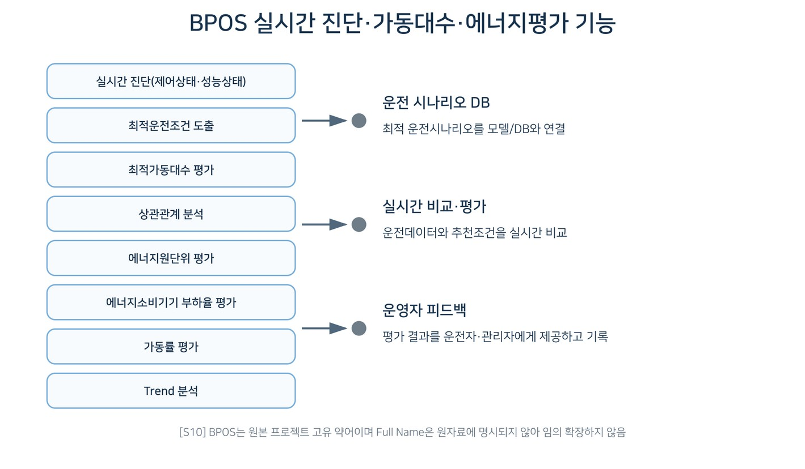

CHAPTER 21 SYNTHESIS
그림 21-2. BPOS 의 실시간 진단·가동대수·에너지평가 기능. [S10] 원본 기능구조를 출판용 도 식으로 재작성. BPOS Full Name 은 임의 확장하지 않음. TERM NOTE | 영문 약어 Full Name BEMS = Building Energy Management System BPOS = 원본 프로젝트의 건물 운전최적화 시스템 고유 약어 — Full Name 은 원자료에 명시되지 않아 임의 확장하지 않는다. KPI·운전기준·진단 로직 대표 계절인 1·4·7·10 월 각 1 주를 5~15 분 간격으로 분석하는 방안이 제안되 었다. 제안단계 연간 에너지절감 목표는 약 3~10%이며 검증실적이 아니라 기대효 과다. ENGINEER’S NOTE | N/A 가 아닌 계측값은 단위·계측위치·시간주기와 정상범 위를 기록하고, 센서오류·결측·시간 불일치를 운전효율 문제와 구분한다. M&V | 외기·점유·Schedule·설비부하를 반영하고 동일 계측경계에서 Adjusted Baseline 과 Actual 을 비교한다. 3~10% 목표치는 검증성과와 구분 한다. CHAPTER 21 SYNTHESIS

인쇄본 기준 p. 96